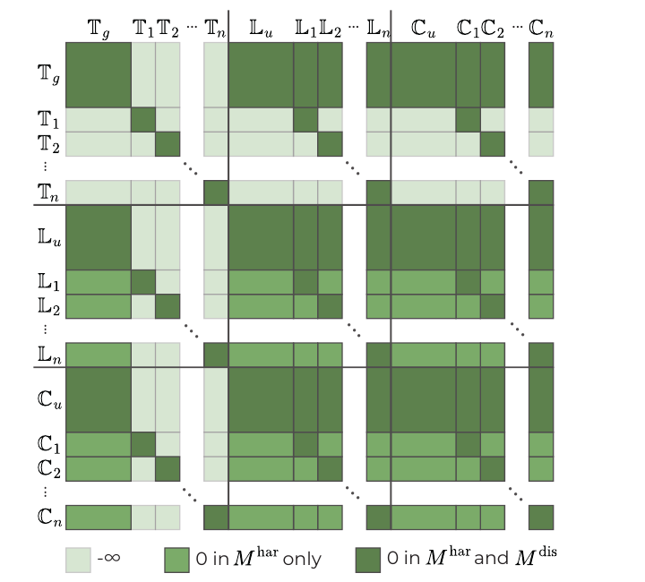
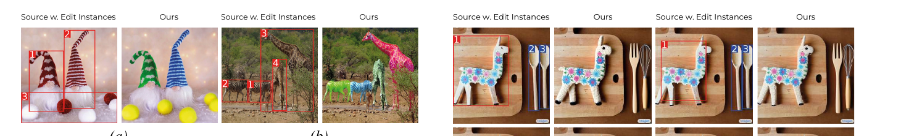

Shifting the Breaking Point of Flow Matching for Multi-Instance Editing
Abstract
Flow matching models have recently emerged as an efficient alternative to diffusion, especially for text-guided image generation and editing, offering faster inference through continuous-time dynamics. However, existing flow-based editors predominantly support global or single-instruction edits and struggle with multi-instance scenarios, where multiple parts of a reference input must be edited independently without semantic interference. We identify this limitation as a consequence of globally conditioned velocity fields and joint attention mechanisms, which entangle concurrent edits. To address this issue, we introduce Instance-Disentangled Attention, a mechanism that partitions joint attention operations, enforcing binding between instance-specific textual instructions and spatial regions during velocity field estimation. We evaluate our approach on both natural image editing and a newly introduced benchmark of text-dense infographics with region-level editing instructions. Experimental results demonstrate that our approach promotes edit disentanglement and locality while preserving global output coherence, enabling single-pass, instance-level editing.
Highlights
Instance-Disentangled Attention
An inference-time intervention that partitions the joint attention of MMDiT blocks, binding each instruction to its region and blocking cross-instance leakage — no retraining required.
Single-Pass Multi-Editing
All edits are applied simultaneously in one inference pass, offering an efficient alternative to iterative or multi-turn pipelines as the number of instances grows.
Efficient Multi-Prompt Encoding
Instructions are encoded independently and concatenated with length proportional to their semantic content, ensuring isolation by construction without linear blow-up in cost.
InfoEdBench Benchmark
A new benchmark of text-dense infographics with paragraph-level region annotations and editing instructions, stress-testing many fine-grained edits per image.
Method
State-of-the-art flow-matching editors parameterize the velocity field with a Multimodal Diffusion Transformer (MMDiT) and apply joint attention over concatenated text, latent, and context tokens. Allowing every token to attend to every other token causes attribute leakage: concepts meant for one region bleed into another as the number of edits grows.
Instance-Disentangled Attention (IDAttn) partitions the joint token sequence by both modality and instance association, then governs information flow with an additive attention mask. We use two regimes: a disentanglement mask Mdis that isolates each instance (its text, latent, and context tokens attend only to one another), and a harmonization mask Mhar that relaxes this to restore global coherence. Following the empirical behavior of transformer layers, Mhar is applied in the early and late layers and Mdis in the central layers, localizing edits without breaking the global flow.

Logic of the proposed joint attention masks. Global prompt and background tokens stay self-consistent, while each instance's text, latent, and context tokens attend only within the instance.
InfoEdBench: Infographics Editing Benchmark
Existing multi-instance benchmarks are limited in both the number of editable regions per image and overall scale. We argue that infographics — text-dense, aesthetically coherent information visualizations — are an ideal testbed: a single uncontrolled edit can alter the semantics of the whole image, and text regions can be annotated automatically with detection/OCR pipelines. Each instruction takes the form Change ‘SRC’ to ‘TGT’. The benchmark has two subsets of increasing difficulty:
- Crello Edit — paired samples derived from layer-annotated graphic designs, with text translated into French, German, Italian, and Spanish and re-rendered using original font metadata (1,512 training / 4,367 test samples; 1–25 edits each).
- InfoEdit — real, professionally-made, open-source English infographics with large, high-resolution layouts and many small text boxes.
Results
Natural image multi-instance editing

IDAttn applied with imprecise and overlapping bounding boxes: edits remain localized and disentangled.
Quantitative results on LoMOE-Bench
| Method | Tgt CLIP ↑ | Bg LPIPS ↓ | Loc CLIP ↑ | AR % ↑ |
|---|---|---|---|---|
| FLUX | 24.71 | 0.078 | 0.266 | -0.059 |
| FLUX µT | 25.71 | 0.074 | 0.282 | 0.550 |
| FLUX w/ v.c. | 24.49 | 0.072 | 0.267 | 0.265 |
| Ours | 25.60 | 0.073 | 0.277 | 0.574 |
Our approach improves prompt following (AR%) and target alignment while preserving the background, performing edits in a single pass.
BibTeX
@inproceedings{zaccagnino2026idattn,
title = {{Shifting the Breaking Point of Flow Matching for Multi-Instance Editing}},
author = {Zaccagnino, Carmine and Quattrini, Fabio and Simsar, Enis and
Tintor\'e Gazulla, Marta and Cucchiara, Rita and Tonioni, Alessio and
Cascianelli, Silvia},
booktitle = {Proceedings of the International Conference on Machine Learning (ICML)},
year = {2026}
}